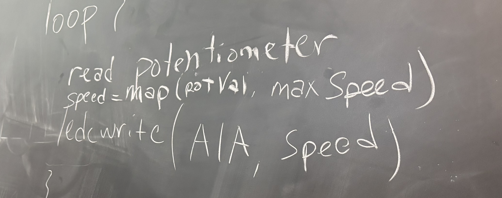
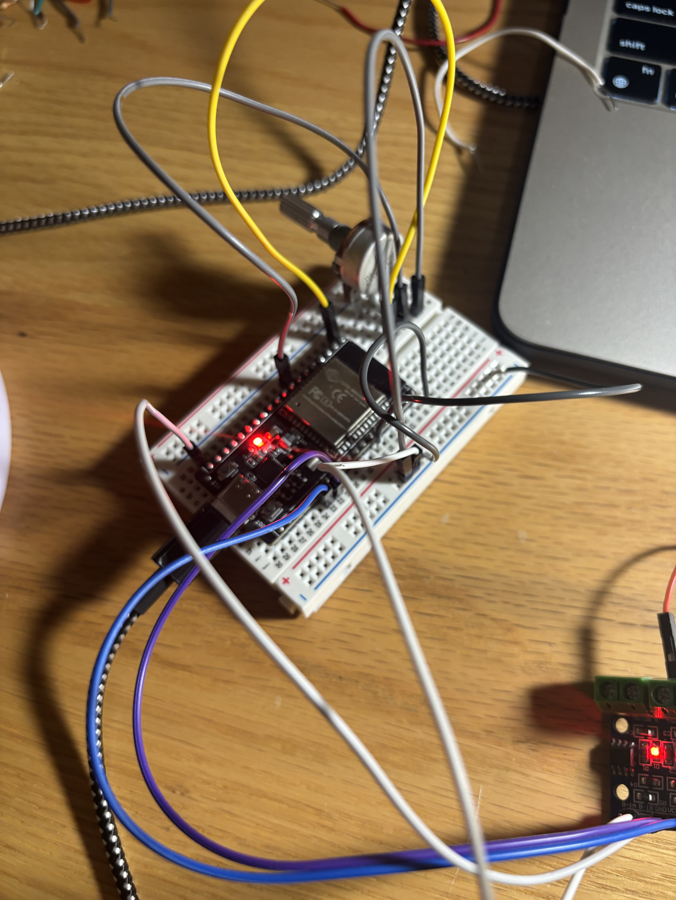
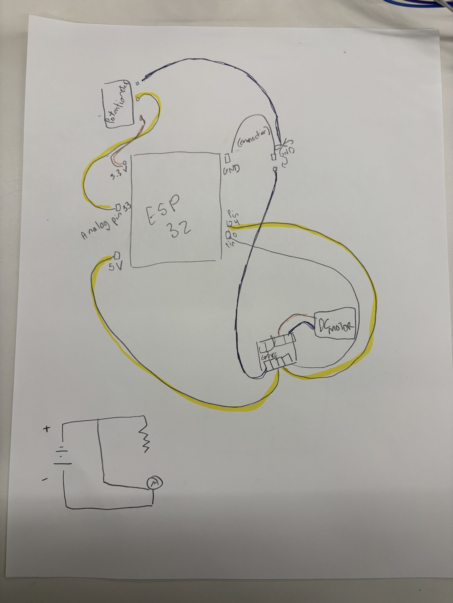

<div class="textcontainer">
<p class="margin"> </p>
<h3>Week 4: Microcontroller Programming</h3>
<p class="margin"> </p>
<h2><b><u><i>ARDUINO PROJECT:</h2></u></b></i>
<h4>Continuation of kinetic project -- making the teacups spin at different speeds and directions</h2>
<p class="margin"> </p>
<h2><b><u><i>CODING:</h2></u></b></i>
<h4> Originally, I was planning on combining these two projects together anyway, but I ran out of time on day 3 to add the arduino component. I thought this would be a great addition to the "carnival" ride idea since most rides can adjust speeds to slowly become faster/slower. I also thought changing directions would make the concept cooler - and can help me in my final project.
<b> Here's the final code: <a/></b>
<p class="margin"> </p>
<pre><code class="language-arduino">
void loop() {
int potPin = 33; // potentiometer pin
const int A1A = 0; // measures speed
const int A1B = 4; // measures direction
const int freq = 5000;
const int resolution = 8;
void setup() {
Serial.begin(9600);
pinMode(potPin, INPUT); // sets potentiometer as input so analog values can be read
pinMode(A1A, OUTPUT); // sets motor speed as output
pinMode(A1B, OUTPUT); // sets motor direction as output
ledcAttach(A1A, freq, resolution); //PWM configuration
ledcAttach(A1B, freq, resolution);
ledcWrite(A1A, 0); // Sets both motors to be off
ledcWrite(A1B, 0);
}
void loop() {
int potVal = analogRead(potPin); // reads voltage from potentiometer (0 to 4095)
Serial.println(potVal); //prints out values so I can monitor if its working
int center = 2048; // middle value; used as turning point from left to right
int speed;
if (potVal > center) { //if potenitometer is turned to the right (greater than the center,)
// forward
speed = map(potVal, center, 4095, 0, 255); //translates values from analog to 0-255
ledcWrite(A1A, speed); // allows motor to turn forward
ledcWrite(A1B, 0); // turns off
} else if (potVal < center) { // if potentiometer is turned to the left (less than the center,)
// reverse
speed = map(potVal, center, 0, 0, 255);
ledcWrite(A1A, 0);
ledcWrite(A1B, speed);
} else { //if the potenitometer is in the middle, stop the motor (so it can switch from left to right)
// stop
ledcWrite(A1A, 0);
ledcWrite(A1B, 0);
}
delay(10);
}
</code></pre>
<h4> First, I adjusted the speed of the gear using a potentiometer and mapping out the analog and digital aspects. I got help from jessica, and after completing the code for just adjusting the speed, I found it on the website -- so i double-checked. <p class="margin"> </p> 
<img src="rolling.GIF" alt="Flowers in Chania" width = 200;
<p class="margin"> </p>
<h6><i></p> jessica's pseudocode along with the first iteration of movement</h6></i></p>
<h4> I felt this was a bit boring since all I did was hook up the potentiometer and map out the speed, so I decided to find a way to change the gears. I decided on a method I stumbled upon online - making the a "center" variable, and basing the rest of the code off if statements. If the analog reader senses that the number is over the 'center,' the gears will turn right and vice versa. I found out that one pin high, one low = forward and one pin low, one high = reverse. Therefore, I had to turn off A1A and while running A1B and vice versa. Basically, I'm reversing the polarity of the voltage. Here's a video of the final product:
<p class="margin"> </p>
<img src="reverse.GIF" alt="Flowers in Chania" width = 200;
<p class="margin"> </p>
<h6><i></p> turns one way at one end of potentiometer, turns the other at the other end</h6></i></p>
<h2><b><u><i>CIRCUTRY:</h2></u></b></i>
<h4> The wires were extremely confusing for this. I had to first hook up the potentiometer and after following the tutorial for the LED, i decided to try with the gear. After many tries and hooking up the 5V to the bus, I got it to work.
<p class="margin"> </p>
 </p>
<h4> Here's the circutry map as well: <h4>
